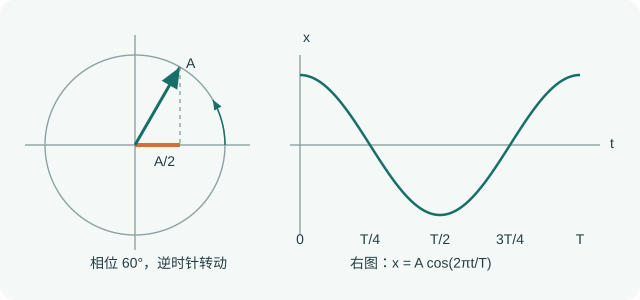
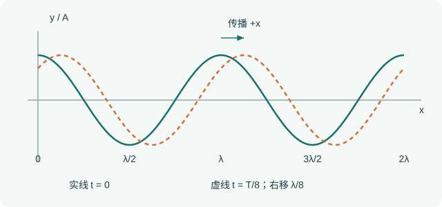
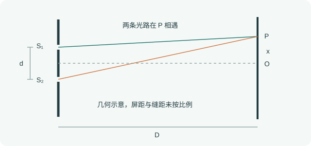
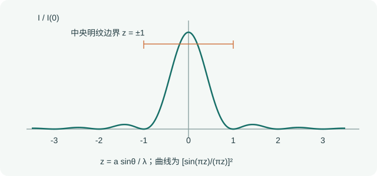
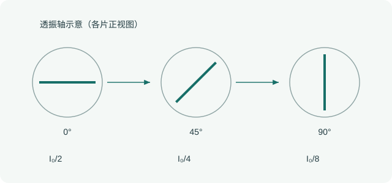

STUDY NOTES / 09—11大学物理下 · 期中重点复习
振动。波动。
光学。
用清晰的模型连接公式，
把每一道题拆成可执行的步骤。
MODEL → EQUATION → SOLUTION 先抓住这三条主线
第 9 章定相位，第 10 章定传播，第 11 章定光程差。所有例题先统一单位，再代数字。
- 09单点如何运动初始条件、能量、振动合成
- 10状态如何传播波函数、干涉、驻波边界
- 11光如何叠加干涉、衍射、偏振
星级怎么用 ★★★★★ 优先掌握 ★★★★☆ 熟练应用 ★★★☆☆ 完成核心后巩固。星级依据知识依赖和课件题型作复习建议，不代表老师给定的分值或押题概率。三章均为核心章节。
振动题的主线是：选平衡位置，找回复力，定角频率，用初始位移和速度确定初相。
知识点 ★★★★★
简谐振动：三个量确定一次运动
课件定位：9-1 第 9–20 页；9-2 第 1–17 页

图示与本节公式对应。窄屏可左右滑动查看完整模型图。以平衡位置为坐标原点。回复力与位移成正比、方向相反时，物体做简谐振动。A≥0 为振幅，ω 为角频率，φ 为初相。
x¨+ω2x=0,x=Acos(ωt+φ) v=−Aωsin(ωt+φ),a=−ω2x T=ω2π,ν=T1,vmax=Aω,∣a∣max=Aω2 给定 x0,v0：先求幅度，再用正弦、余弦一起确定象限。
A=x02+(ωv0)2,φ=atan2(−ωv0,x0) 旋转矢量逆时针转动，其在位移轴上的投影为 x。从一个状态到另一个状态的最短时间为 Δt=Δφ/ω，其中取符合运动方向的最小正相位增量。
做题步骤
- 从受力或周期得到角频率。
- 将初始位移和速度代入，确定振幅与初相象限。
- 写出完整方程，再求导、代时刻或沿相位圆找时间。
易错点只用 arccos(x0/A) 会丢失速度方向。正速度最大时，余弦式初相为 −π/2。
知识点 ★★★★★
弹簧、单摆与复摆
课件定位：9-3 第 1–9 页；9-2 第 18–19 页
共同判据：q¨+ω2q=0。角位移也可作为广义坐标。摆的公式采用小角近似 sinθ≈θ，角度须用弧度。
| 模型与条件 | 角频率 | 周期 |
|---|
| 理想弹簧振子，劲度 K、质量 m | K/m | 2πm/K |
| 单摆，摆长 l、质点摆球、小摆角 | g/l | 2πl/g |
| 复摆，支点到质心距离 h | mgh/JO | 2πJO/(mgh) |
复摆的 JO 是对支点轴的转动惯量：JO=JC+mh2。竖直弹簧的重力改变平衡位置，理想线性条件下不改变 ω。
做题步骤
- 先找到静态平衡位置，把位移从那里算起。
- 列牛顿第二定律或转动定律，小角度时线性化。
- 整理成标准方程，读取角频率，检查量纲。
易错点不能把单摆摆长直接套成复摆的质心距离。复摆必须用支点转动惯量。
知识点 ★★★★★
能量：位移决定能量比例
课件定位：9-4 第 1–11 页
无阻尼自由振动，以平衡位置势能为零，且 K=mω2。
E=21KA2,Ep=21Kx2,Ek=21K(A2−x2) EEp=A2x2,EEk=1−A2x2,v=±ωA2−x2 动能与势能反相交换，总能量不变。两者随时间变化的周期均为 T/2，周期平均值均为 E/2。动势能相等时 ∣x∣=A/2。
做题步骤
- 先由振幅求总能量，或用最大速度反求总能量。
- 用位移与振幅的比值求能量比例。
- 若求速度，最后结合运动方向确定正负号。
易错点弹簧振子的势能由位移决定；行波介质小体积元的弹性势能由形变决定，不能混套。
知识点 ★★★★★
振动合成与拍
课件定位：9-5 第 1–23 页
同方向、同频率的两振动相加，仍为同频简谐振动。令 Δφ=φ2−φ1：
A2=A12+A22+2A1A2cosΔφ C=A1cosφ1+A2cosφ2,S=A1sinφ1+A2sinφ2 A=C2+S2,φ=atan2(S,C) 同相时 A=A1+A2；反相时 A=∣A1−A2∣；完全抵消时初相无定义。
相互垂直、同频的振动 x=Axcosωt、y=Aycos(ωt+δ)：
Ax2x2+Ay2y2−AxAy2xycosδ=sin2δ δ=0,π 为直线；δ=±π/2 为正椭圆，且 Ax=Ay 时为圆。转向用某点的速度判断。
两等振幅、同方向、频率接近的振动形成拍：
x=2A0cos(2ω1−ω2t)cos(2ω1+ω2t),νbeat=∣ν1−ν2∣ 做题步骤
- 先分清同方向还是互相垂直，同频还是异频。
- 同向同频用相量分量相加；垂直同频消去时间判断轨迹。
- 拍频取普通频率之差，单位为 Hz。
易错点合振幅不能直接做代数相加。拍的包络振幅取绝对值，拍频不是频率差的一半。
知识点 ★★★☆☆
阻尼、受迫振动与共振
课件定位：9-6 第 1–8 页
阻力为 −bx˙，令 β=b/(2m)、ω0=K/m。欠阻尼条件为 β<ω0：
x=A0e−βtcos(ωdt+φ),ωd=ω02−β2 β=ω0 为临界阻尼，β>ω0 为过阻尼，后两者无周期性往复振动。弱阻尼下周期平均能量近似按 e−2βt 衰减。
外力 F0cosΩt 驱动的稳态频率等于 Ω：
A(Ω)=(ω02−Ω2)2+4β2Ω2F0/m 位移幅值共振频率为 Ωr=ω02−2β2（存在非零峰值需 β<ω0/2）。弱阻尼时才近似等于 ω0；速度幅值最大出现在 Ω=ω0。
做题步骤
- 辨认自由振动还是有周期外力的受迫振动。
- 稳态频率取驱动频率，衰减快慢看阻尼。
- 共振题区分位移幅值与速度幅值。
易错点课件在弱阻尼近似下讨论共振。不能把“所有共振都严格发生在固有频率处”当成一般结论。
知识点 ★★★☆☆
LC 电磁振荡：机械模型的对应
课件定位：9-7 第 1–8 页（第 9–16 页为重复内容）
理想 LC 回路忽略电阻和辐射损耗。定义电流正方向使 i=dq/dt。
q¨+LCq=0,ω0=LC1,T=2πLC q=Qmcos(ω0t+φ),i=−ω0Qmsin(ω0t+φ) WE=2Cq2,WB=21Li2,W=2CQm2 初始电压为 U0、电流为零时，Qm=CU0，Im=U0C/L。对应关系：x↔q，m↔L，K↔1/C。
做题步骤
- 先规定电荷和电流的参考正方向。
- 由 L、C 求频率，再由初态求最大电荷或最大电流。
- 用总能量守恒检查电场能与磁场能。
易错点电容电荷最大时电流为零；电荷为零时电流最大。电流正负依赖参考方向。
PRACTICE / 先做题，再展开解析
第 9 章 · 重点题型
8 道自编训练题，围绕课件中的典型方法。
选择题 · 单选 9-1
选择 · 初相象限
质点做
x=Acos(ωt+φ) 的振动。
t=0 时
x=A/2，且沿负方向运动。主值初相可取多少？
查看详细解析 +
正确答案：A
cosφ=1/2。又因 v0=−Aωsinφ<0，故 sinφ>0，初相在第一象限。
φ=π/3 B 的位移正确但速度方向相反；C、D 的位移为负。
选择题 · 单选 9-2
选择 · 最短时间
从平衡位置向正方向出发，第一次到达
x=A/2 所需时间为？
查看详细解析 +
正确答案：D
可直接用 x=Asinωt。首次到达时 sinωt=1/2，取 ωt=π/6。
t=2π/Tπ/6=T/12 不是匀速运动，不能按位移比例分配时间。
选择题 · 单选 9-3
选择 · 能量比例
简谐振子在
∣x∣=A/2 时，动能与势能之比为？
查看详细解析 +
正确答案：C
Ep/E=(x/A)2=1/4,Ek/E=3/4 所以 Ek:Ep=3:1。在同一位移处的两个运动方向不影响能量。
选择题 · 单选 9-4
选择 · 受迫振动
有阻尼振子在频率为
20Hz 的周期外力作用下达到稳态，其固有频率为
18Hz。稳态频率为？
查看详细解析 +
正确答案：B
暂态衰减后，稳态振动跟随外力，频率为 20Hz。固有频率影响响应幅度和相位，不决定稳态频率。2 Hz 是这两个数之差，但此题不是两独立振动的拍。
计算题 · 写出过程 9-5
计算 · 方程、受力与最短时间
质量
m=0.020kg 的振子，振幅
A=0.040m、周期
T=2.0s。初始
x0=0.020m 且向负方向运动。求振动方程、
t=0.50s 时的位置和合力，以及首次到达
x=−0.020m 的时间。
查看详细解析 +
- 定参数：ω=2π/T=πrad/s，cosφ=1/2 且 sinφ>0，故 φ=π/3。
- 写方程：
x=0.040cos(πt+π/3) m - 代时刻：相位为 5π/6，
x=−0.0203 m≈−0.0346 m F=−mω2x=0.00043π2 N≈+6.84×10−3 N 力朝平衡位置，正号合理。 - 首次到达目标的相位为 2π/3，不是 4π/3：
Δt=(2π/3−π/3)/π=1/3 s
计算题 · 写出过程 9-6
计算 · 复摆建模
长
l=0.60m 的均匀细杆绕上端水平轴，在竖直面内作小角度摆动。求周期（
g=9.8m/s2）。
查看详细解析 +
- 质心距支点 h=l/2，支点转动惯量 JO=ml2/3。
- 力矩方程：
JOθ¨=−mg(l/2)sinθ≈−mg(l/2)θ - 整理：θ¨+2l3gθ=0，因此
T=2π3g2l≈1.27 s
检查：质量消去；等效单摆摆长为 2l/3。
计算题 · 写出过程 9-7
计算 · 两振动合成
同方向振动
x1=0.030cos(4πt)、
x2=0.040cos(4πt+π/2)，单位均为 m。求合振动。
查看详细解析 +
- 展开：x=0.030cos4πt−0.040sin4πt。
- 比较 Acos(4πt+φ)：Acosφ=0.030，Asinφ=0.040。
- 得到 A=0.050m，φ=arctan(4/3)=0.9273rad，位于第一象限。
x=0.050cos(4πt+0.9273) m 代 t=0 可得 x=0.030m，初速度为负，与原式一致。
计算题 · 写出过程 9-8
计算 · LC 振荡能量
理想 LC 电路中
L=0.20H、
C=5.0μF，电容初始电压
U0=10V、电流为零。求角频率、最大电流和首次电场能等于磁场能的时刻。
查看详细解析 +
- LC=10−6s2，故 ω0=1000rad/s，T=2π×10−3s。
- Qm=CU0=5.0×10−5C，
Im=ω0Qm=0.050 A - W=CU02/2=2.5×10−4J，WE=Wcos2(1000t)，WB=Wsin2(1000t)。
- 首次相等对应 1000t=π/4，
t=π/4000 s≈0.785 ms 此时各占 1.25×10−4J。
波动题先认清横轴是位置还是时间。行波沿传播方向相位落后；驻波则先看边界条件。
知识点 ★★★★★
波函数：传播方向与相位延迟
课件定位：10-1 第 1–19 页；10-2 第 1–25 页

图示与本节公式对应。窄屏可左右滑动查看完整模型图。机械波需要波源和介质，传播振动状态与能量，介质质点在各自平衡位置附近振动。横波的振动方向垂直于传播方向，纵波则平行。
u=λν=Tλ=kω,k=λ2π 若 x=x0 处振动为 Acos(ωt+φ0)：
沿 +x:沿 −x:y=Acos[ωt−k(x−x0)+φ0]y=Acos[ωt+k(x−x0)+φ0] 例如沿 +x 时，距参考点更远的点要晚 (x−x0)/u 才重复同一状态。周期由波源决定；在给定介质和条件下求波速，再由 λ=u/ν 求波长。无色散理想介质中，波速与频率无关。
做题步骤
- 写清参考点坐标及其振动方程。
- 沿传播方向用“当前时刻减去传播时间”。
- 整理成波函数，将参考点坐标代回检查。
易错点同一波也可写成 cos(kx−ωt+α)。判断方向要看等相位面如何移动，不能只盯某一项符号。
知识点 ★★★★★
波形图、振动图与质点速度
课件定位：10-2 第 7–14、21–32 页
波形图固定时刻、横轴为 x；振动图固定质点、横轴为 t。波速 u 与质点速度 vy 是不同量。
vy=∂t∂y,ay=∂t2∂2y=−ω2y +x 行波:−x 行波:vy=−u∂x∂yvy=+u∂x∂y 沿 +x 的波，在空间图上斜率为正处，质点向下运动；斜率为负处，质点向上运动。波峰、波谷处瞬时速度为零，但加速度不为零。
同一时刻，沿 +x 的波有 Δφ=−kΔx；同一点经过 Δt 的相位变化为 ωΔt。
做题步骤
- 先读横轴和单位，再读振幅、波长或周期。
- 由箭头或质点速度判断传播方向。
- 用参考点的位移和速度确定相位，再求导验证。
易错点向右传播不代表介质质点向右运动；横波中质点沿横向振动。
知识点 ★★★★☆
行波能量与波强
课件定位：10-3 第 1–14 页
对均匀、无耗散介质中的单一平面简谐弹性行波，令 ψ=ωt−kx+φ，ρ 为体积质量密度：
wk=wp=21ρω2A2sin2ψ,w=wk+wp w=21ρω2A2,I=uw=21ρuω2A2 此时小体积元的动能与弹性势能同相变化，并不断与相邻介质交换能量。I 是单位面积的平均功率，单位 W/m2。弦波的平均功率为 P=21μuω2A2，μ 为线密度。
无吸收各向同性点源的球面波：I=P/(4πr2)，所以 I∝r−2、A∝r−1。该结论避开点源近场。
做题步骤
- 判断波型及是否有吸收，确认题目求功率还是波强。
- 相同介质、频率下用 IproptoA2。
- 球面波优先用穿过整个球面的功率守恒。
易错点行波介质元的总机械能通常不守恒。上述动势能同时相等不适用于任意叠加波或驻波。
知识点 ★★★★★
波的干涉、衍射与反射折射
课件定位：10-4 第 1–17、21–26 页
稳定干涉要求同频、相位差恒定，并有相同方向的振动分量。取两波在 P 点的相位差为“2 减 1”，两传播距离分别为 r1,r2：
ΔφP=(φ20−φ10)−λ2π(r2−r1) AP=A12+A22+2A1A2cosΔφP 相位差为 2mπ 时最强，为 (2m+1)π 时最弱；相消到零还要求两波在 P 点振幅相等。只有同相波源才可直接用程差为整数波长加强、半奇数波长减弱。
惠更斯原理用子波包络构造新波面；孔或障碍物尺寸与波长可比时衍射明显。在各向同性介质中，波线垂直于波面。
sinrsini=u2u1,n1sini=n2sinr 反射角等于入射角。光从 n1>n2 介质入射时，临界角 sinic=n2/n1，i>ic 时全反射。角度均对法线测量。
做题步骤
- 先写波源的初相差。
- 按同一个顺序写路程差，求观察点相位差。
- 再判加强、减弱或求合振幅。
易错点反相波源在等程点会相消；路程差为零不自动意味着加强。
知识点 ★★★★★
驻波：波节、波腹和边界
课件定位：10-5 第 1–26 页
 图示与本节公式对应。窄屏可左右滑动查看完整模型图。
图示与本节公式对应。窄屏可左右滑动查看完整模型图。同频、等振幅、同偏振的两列波反向传播，可形成纯驻波。例如：
Acos(ωt−kx)+Acos(ωt+kx)=2Acoskxcosωt 此例的局部振幅为 2A∣coskx∣；波节为 x=(2m+1)λ/4，波腹为 x=mλ/2。若边界导致空间因子为 sinkx，节点位置随之改变。
相邻波节间距=λ/2,相邻波节与波腹间距=λ/4 同一相邻波节区间内各点同相，跨过一个波节相位差为 π；波节本身振幅为零，相位无定义。理想纯驻波的周期平均净能流为零。
| 弦的边界 | 允许波长 | 允许频率 |
|---|
| 两端固定（均为位移波节） | λn=2l/n | νn=nu/(2l) |
| 一端固定、一端自由 | λn=4l/(2n−1) | νn=(2n−1)u/(4l) |
上表 n=1,2,…。理想固定端反射位移发生 π 相变，自由端反射位移不反相。一般介质界面可能只部分反射，不能一律视为波节。
做题步骤
- 以固定端位移为零等边界条件，确定反射波相位。
- 用三角恒等式相加，分离空间因子和时间因子。
- 令空间因子为零求波节，绝对值最大求波腹。
易错点不能不看坐标原点就背节点公式。声音的位移波节对应压强波腹，题目若换了物理量要重新判断。
知识点 ★★★★☆
多普勒效应：先判断靠近还是远离
课件定位：10-6 第 1–19 页
以下为静止介质中、沿同一直线、亚声速运动的声波公式。u 是相对介质的声速，vO 向波源运动取正，vS 向观察者运动取正：
νO=νSu−vSu+vO 分子对应观察者迎接波面速度，分母对应运动波源改变波长。靠近升频，远离降频。这里的速度必须相对介质，不能仅用源与观察者的相对速度替代。
固定声源与接收器，反射物体以速度 v 迎面靠近，需应用两次多普勒效应：
νecho=νSu−vu+v,v=uνecho+νSνecho−νS 做题步骤
- 画出声源、观察者和速度方向。
- 各自相对介质判定正负，代入同一约定。
- 回波题先把物体当接收者，再把它当反射波源。
易错点声波公式不能直接套给真空中的光。斜向运动需沿传播方向分解，并考虑发射时的几何关系。
知识点 ★★★☆☆
平面电磁波
课件定位：10-7 第 1–10 页
真空中平面电磁波是横波：E⊥B，二者均垂直传播方向，且同相；传播方向由 E×B 给出。
c=ε0μ01,E0=cB0 w=21ε0E2+2μ0B2,S=μ01E×B I=⟨S⟩=21ε0cE02=2μ0cB02 E0,B0 为峰值；若使用有效值，则 I=ε0cErms2。电磁波不需要机械介质。理想线性无耗散介质中波速为 1/εμ。
做题步骤
- 先确认真空或介质条件。
- 用电场和磁场的叉乘检查传播方向。
- 计算平均强度时确认题目给峰值还是有效值。
易错点电场和磁场同相，不是相差四分之一周期。不要把平面电磁波与 LC 回路的能量交换混淆。
PRACTICE / 先做题，再展开解析
第 10 章 · 重点题型
8 道自编训练题，围绕课件中的典型方法。
选择题 · 单选 10-1
选择 · 波形斜率
简谐横波沿
+x 传播。某时刻某质点处波形的斜率为正，其瞬时运动方向是？
查看详细解析 +
正确答案：B
沿正方向的行波满足 vy=−u∂y/∂x。斜率为正，故 vy<0，质点向下。沿波形向右看，后续较低的形状将移到此处。
选择题 · 单选 10-2
选择 · 驻波相位
理想驻波中，同一对相邻波节之间的两个非波节质点怎样振动？
查看详细解析 +
正确答案：B
同一波腹所在区间，空间因子的符号一致，时间因子一致，因此相位相同。振幅随位置变化，各点会与邻近部分交换能量。
选择题 · 单选 10-3
选择 · 球面波衰减
无吸收均匀介质中，远离各向同性点源的距离从
r 增至
3r，振幅和波强分别变为原来的多少？
查看详细解析 +
正确答案：C
总功率 P=4πr2I 守恒，所以 I 变成 1/9；又因同介质同频率下 I∝A2，振幅变成 1/3。
选择题 · 单选 10-4
选择 · 非同相波源
两相干波在 P 点的分振幅相等。两波源初相差为
π，到 P 的程差为
λ/2。P 点的合振幅为？
查看详细解析 +
正确答案：D
ΔφP=π−2πλλ/2=0 初相差与传播引起的相位差抵消，P 点加强，合振幅为 2A。
计算题 · 写出过程 10-5
计算 · 从参考点写波函数
一列波沿
+x 传播，波速
u=4.0m/s。
x0=0.50m 处质点振动为
yP=0.020cos(8πt+π/3)m。求波函数、波长，以及
x=0,t=0 处质点速度。
查看详细解析 +
- ω=8π，ν=4Hz，λ=u/ν=1.0m，k=2πrad/m。
- 参考点延迟法：
y=0.020cos[8π(t−4x−0.50)+π/3] y=0.020cos(8πt−2πx+4π/3) m - 对时间求偏导：vy=−0.160πsin(8πt−2πx+4π/3)。因此
vy(0,0)=0.0803π≈0.435 m/s 方向向上。
检查：代入 x=0.50 后初相回到 π/3。
计算题 · 写出过程 10-6
计算 · 两相干波的合振幅
两同频同方向波源初相满足
φ20−φ10=π/2，波长为
0.80m。P 点到两源的距离分别为
r1=1.0m、
r2=1.2m，两波在 P 的振幅均为
3.0mm。求 P 点合振幅；若仅把
r2 改为
1.6m 且分振幅仍相等，结果怎样？
查看详细解析 +
- 原程差 0.20m=λ/4，
ΔφP=π/2−(2π/0.80)×0.20=0 故 AP=6.0mm。 - 改变后程差 0.60m=3λ/4，
ΔφP=π/2−3π/2=−π 等振幅反相，AP=0。
使用的是观察点的分振幅；球面波源振幅相同不保证到达 P 点时仍相同。
计算题 · 写出过程 10-7
计算 · 固定端反射与驻波
弦位于
x≤0，
x=0 为固定端。入射波
yi=0.010cos(20πt−5πx)m。求反射波、合成驻波、区间
[−0.8,0] 内的波节与波腹。
查看详细解析 +
- 反射波沿 −x 传播。由固定端 yi(0,t)+yr(0,t)=0，
yr=−0.010cos(20πt+5πx) m - 应用 cos(a−b)−cos(a+b)=2sinasinb：
y=0.020sin(20πt)sin(5πx) m - 波节：5πx=nπ，即 x=n/5。区间内为 −0.8,−0.6,−0.4,−0.2,0 m。
- 波腹：∣sin(5πx)∣=1，区间内为 −0.7,−0.5,−0.3,−0.1 m，最大振幅 0.020m。
检查：λ=0.4m，相邻节点间距 0.2m 正好为半波长。
计算题 · 写出过程 10-8
计算 · 超声回波测车速
静止超声发射器发出
40.0kHz 的声波，收到迎面驶来汽车的回波频率为
44.0kHz。声速
u=340m/s，求车速。
查看详细解析 +
- 汽车先作为运动观察者，接收到 ν1=ν0(u+v)/u。
- 汽车再作为向接收器靠近的反射波源：νe=ν1u/(u−v)。
- 联立并解出：
v=34044.0+40.044.0−40.0=16.19 m/s≈58.3 km/h
一次多普勒公式会漏掉反射过程。回波频率升高也与“汽车靠近”的方向一致。
本章内容最多。优先掌握双缝、薄膜、劈尖与牛顿环、单缝和光栅，再练偏振与波片。光学公式中的 λ 默认是真空波长，空气近似真空。
知识点 ★★★★★
相干光、双缝与劳埃德镜
课件定位：11-1 第 3–5 页；11-2 第 1–23 页

图示与本节公式对应。窄屏可左右滑动查看完整模型图。相干光具有相同频率、稳定相位差和非零的共同偏振分量。通常把同一光源的光分成两束，再使其叠加。两独立普通光源不能产生稳定可见干涉条纹。
I=I1+I2+2I1I2cosΔφ 上式适用于偏振方向相同。光程 L=∫nds；均匀介质中为 nr。总相位差包括传播相位、源初相差和反射附加相位。光程差用真空波长换算相位。
空气中、同相双缝，缝距 d，屏距 D≫d，近轴 ∣x∣≪D：
δ≈dsinθ≈Ddx,xmbright=dmλD xmdark=d(m+1/2)λD,Δx=dλD(m∈Z) 在一缝前插入厚度 e、折射率 n 的薄片（替代空气），额外光程为 (n−1)e，条纹移动数 N=(n−1)e/λ，中央明纹向被遮缝一侧移动。全装置浸入折射率 n 的均匀介质，条纹间距缩为原来的 1/n。
劳埃德镜中反射光与直接光干涉；通常反射带来 π 相变，故等几何程点为暗纹。
做题步骤
- 列出两条光路，用一致顺序求光程差。
- 把源初相及反射相变加入总相位差。
- 写明暗条件，再用近轴几何把程差换成屏上位置。
易错点“两条明纹间距”要数间隔数：同侧第 1 级到第 4 级是 3 个间隔。
知识点 ★★★★★
薄膜干涉：先数反射相变
课件定位：11-3 第 1–19 页
 图示与本节公式对应。窄屏可左右滑动查看完整模型图。
图示与本节公式对应。窄屏可左右滑动查看完整模型图。折射率 n0→n→ns 的薄膜，膜厚 e，膜内折射角 r。几何光程差为 2necosr。在透明、非磁介质近法线入射下，低折射率向高折射率界面反射的电场相位改变 π，反向则不改变。
Δφ=λ2π(2necosr)+Δφrefl | 两束反射光的相对反射相变 | 反射加强 | 反射减弱 |
|---|
| 有一次相对半波损失（差 π） | 2necosr=(m+1/2)λ | 2necosr=mλ |
| 无相对半波损失（差 0） | 2necosr=mλ | 2necosr=(m+1/2)λ |
m 取使膜厚非负的整数。空气—膜—空气通常只有一次相对反相；空气—膜—更高折射率基底，两次反相彼此抵消。斜入射时先用折射定律求 r。
增透膜：若 n0<n<ns，两束反射均反相，正入射最薄相消膜厚为 e=λ/(4n)；要使反射完全消失，还需振幅匹配 n=n0ns。无吸收理想膜的总反射与透射强度互补。
做题步骤
- 标出三层折射率，逐个判断两个界面的反射相变。
- 求膜内折射角，写 2necosr。
- 根据反射或透射的目标选条件，最后选最小正厚度。
易错点半波损失是相位变化，不是损失一半能量。不能见薄膜就无条件加 λ/2。
知识点 ★★★★★
劈尖与牛顿环：等厚干涉
课件定位：11-4 第 1–27 页
 图示与本节公式对应。窄屏可左右滑动查看完整模型图。
图示与本节公式对应。窄屏可左右滑动查看完整模型图。以下均为反射观察、正入射、一次相对半波损失，夹层折射率为 n。
劈尖：小夹角 α，沿远离接触边方向的厚度 e≈αx。
2nem=mλ（暗纹）,Δx=2nαλ 接触边 e=0 为暗纹。等厚处成条纹，厚度线性变化，所以间距相等。长度 l 的劈尖末端垫片厚度 h≈αl。
牛顿环：平凸透镜曲率半径 R，贴合平板。薄膜厚度 e≈r2/(2R)。
rm2=nmλR（暗环，m=0,1,…） rm2=n(m+1/2)λR（亮环，m=0,1,…） rm+p2−rm2=npλR 反射中心为暗点，半径随 m 增长，因此越向外环越密。浸入折射率为 n 的液体且相变条件不变时，同级半径缩为 1/n。
做题步骤
- 确认反射还是透射、夹层折射率及是否真正接触。
- 用厚度变量写干涉条件，再代入劈尖或球面几何。
- 若测曲率半径，优先用两个暗环的半径平方差消去级次偏差。
易错点直径平方差是半径平方差的 4 倍。中心不接触时有初始厚度，不能直接用接触公式求绝对环级。
知识点 ★★★★☆
迈克耳孙：光走往返两次
课件定位：11-5 第 1–11 页
分束镜把光送入两个臂，反射后再合束。固定观察方向、空气中、镜面沿光束方向移动 Δd，往返光程变化为 2Δd。
N=λ2∣Δd∣,∣Δd∣=2Nλ 在一臂插入厚度 e 的透明片，且光正入射往返穿过两次：
N=λ2(n−1)e 长度为 l 的气室折射率变化 Δn，则 N=2l∣Δn∣/λ。若光路只经过待测区一次，不能使用这个因子 2。
光程差还要小于相干长度量级才能看见稳定条纹；时间相干性常用 lc∼cτc∼c/Δν 估算（具体系数依定义和谱形）。
做题步骤
- 画出哪一段变化，数光束穿过它的次数。
- 求光程变化绝对值。
- 每变化一个波长通过一条条纹，再反求位移或折射率。
易错点镜面移动 λ/2，对应通过一条条纹；不能把镜子位移当作单程光程变化。
知识点 ★★★★★
单缝衍射：中央明纹是两倍宽
课件定位：11-6 第 1–5 页；11-7 第 1–18 页

图示与本节公式对应。窄屏可左右滑动查看完整模型图。惠更斯—菲涅耳原理把波面上子波相干叠加。夫琅禾费衍射采用平行入射、远场观测，或以透镜焦平面等效远场。缝宽记作 a（课件常记 b）。
asinθ=mλ（暗纹，m=±1,±2,…） I(θ)=I(0)(βsinβ)2,β=λπasinθ β=0 处取极限 1，中央为明纹。在焦距 f 的焦平面上，近轴条件下：
xm≈amfλ,W0≈a2fλ,Wside≈afλ 中央明纹宽度指两侧第一暗纹之间的距离。精确位置用 x=ftanθ。次极大精确条件为 tanβ=β（排除零）；半波带给出的半奇数波长位置是近似值。
缝变窄或波长变长，衍射展开得更宽。平行正入射时，在透镜有效口径内平移单缝，焦平面衍射图不移动。
做题步骤
- 认清缝宽和观察距离，是自由传播远场还是透镜焦平面。
- 先求暗纹位置，用两暗纹之差求宽度。
- 必要时检验近轴近似，较大角度用正弦和正切原式。
易错点单缝的 asinθ=mλ 是暗纹；光栅的 dsinθ=mλ 是主极大。
知识点 ★★★★★
光栅：级次、缺级与分辨
课件定位：11-9 第 1–20 页
光栅常数 d=a+b 是相邻缝中心距，a 为透光缝宽、b 为不透光间隔。以下采用单色光正入射：
dsinθ=mλ（主极大，m∈Z） 先用 ∣mλ/d∣≤1 判断几何允许级次。若 ∣mλ/d∣=1，对应 90∘ 掠射，不能在通常正前方有限屏上观察。
主极大与单缝暗纹重合时缺级：
dsinθ=mλ,asinθ=pλ⟹m=pad(p=0) 只保留 m,p 均为整数的组合。若 d/a=3，缺 ±3,±6,… 级；若 d/a=3/2，取 p=2 仍会缺 m=3 级。
中央单缝衍射包络内部满足 ∣m∣<d/a，边界上的主极大因缺级被剔除。照亮缝数 Ns 越多，固定 d 时主峰越窄、位置不变。光栅分辨本领 λ/Δλ=∣m∣Ns。
X 射线布拉格条件：2dhsinθ=mλ，dh 为晶面间距，θ 是射线与晶面的夹角。
做题步骤
- 将刻线密度取倒数得到光栅常数并统一单位。
- 用光栅方程求角度或允许级次。
- 再做缺级筛选，题目限定包络范围时最后筛选范围。
易错点“只有 d/a 为整数才会缺级”过于严格。有理比也可能在某些整数级缺级。光栅常数不是缝宽。
知识点 ★★★☆☆
圆孔与瑞利判据
课件定位：11-8 第 1–7 页
理想圆孔口径 Da，两个等强不相干点源恰可分辨的瑞利角为：
θmin≈1.22Daλ（弧度） smin≈Lθmin θmin 是艾里斑到第一暗环的半角，全角宽为其两倍。增大口径、缩短波长都可提高衍射极限下的分辨能力；单纯放大像并不提高分辨能力。
做题步骤
- 确认题目给的是孔直径还是半径。
- 用同一单位求最小分辨角，单位取弧度。
- 若求物体间距，再乘以观察距离。
易错点这个公式描述理想衍射极限；“角分辨率数值更小”代表分辨本领更高。
知识点 ★★★★★
偏振：马吕斯定律与布儒斯特角
课件定位：11-10 第 1–15 页；11-11 第 1–10 页

图示与本节公式对应。窄屏可左右滑动查看完整模型图。偏振体现光的横波性质。自然光通过理想偏振片，透射强度为入射的一半；线偏振光通过检偏器，强度服从马吕斯定律。
Inatural→P=2I0,Ilinear→P=Iincos2α α 是入射偏振方向与当前偏振片透振轴的夹角。连续通过多片时逐片计算，使用相邻透振轴夹角。
从 n1 入射到 n2 的透明非磁介质，布儒斯特角满足：
taniB=n1n2,iB+rB=90∘ 自然光以此角度入射时，反射光为垂直入射面的线偏振光；折射光通常仍为部分偏振光。
旋转检偏器有完全消光，说明为线偏振光；强度恒定可能是自然光或圆偏振光；强度变化但不消光，可能是部分偏振光或椭圆偏振光，需要波片进一步区分。
做题步骤
- 先判入射光是自然光、线偏振光还是其他偏振态。
- 每过一片，更新光强和偏振方向。
- 反射题画法线，确定折射率之比和布儒斯特角。
易错点只有自然光通过第一片理想偏振片才直接减半。对已线偏振的光，不可每过一片都除以 2。
知识点 ★★★☆☆
双折射与波片
课件定位：11-12 第 1–19 页
各向异性晶体可产生寻常光 o 和非常光 e。单轴晶体沿光轴传播时，两本征模式相速相同，不发生双折射；光轴是一种方向，不限定为某一条线。e 光的有效折射率一般依传播方向而变，不能简单当成固定折射率的各向同性折射。
以下为正入射理想波片、两个正交本征偏振分量共线传播的常用模型。厚度 e 引入相位延迟：
δ=λ2π(ne−no)e 四分之一波片使 ∣δ∣=π/2(modπ)：线偏振光与主轴成 45∘，两个分量等幅，输出圆偏振；一般夹角输出椭圆偏振；沿主轴入射仍为线偏振。
半波片使 ∣δ∣=π(mod2π)：线偏振仍为线偏振，方向关于主轴镜像。若入射方位为 α、主轴方位为 θ，则输出方位为 2θ−α（模 π）。
eλ/4,min=4∣ne−no∣λ,eλ/2,min=2∣ne−no∣λ 理想无损波片改变分量相位，不吸收能量；自然光通过理想波片仍为自然光。用四分之一波片配合检偏器可以区分圆偏振和自然光。
做题步骤
- 沿波片两主轴分解电场，记录两分量幅度。
- 计算相位延迟，与原有相位差叠加。
- 根据分量振幅和相位差判直线、椭圆或圆。
易错点四分之一波片并非总把线偏振变圆偏振；还必须等幅，即入射方向与主轴成 45°。
PRACTICE / 先做题，再展开解析
第 11 章 · 重点题型
10 道自编训练题，围绕课件中的典型方法。
选择题 · 单选 11-1
选择 · 双缝插片
在空气中的双缝实验，给上方狭缝前插入透明薄片。屏幕上中央明纹如何变化？
查看详细解析 +
正确答案：B
薄片增加上方光路的光程。要恢复两路等光程，新的中央明纹必须向上方靠近，使上方几何路径变短。理想均匀薄片使整套条纹平移，近轴条纹间距不变。
选择题 · 单选 11-2
选择 · 反射半波损失
空气、薄膜、基底的折射率依次为
1.00,1.38,1.52，光近乎垂直入射。两束主要反射光的相对反射附加相位为？
查看详细解析 +
正确答案：A
在上表面从低折射率到高折射率反射，反相 π；在下表面同样由低到高，也反相 π。两者相减为 0，所以不能再额外加一次半波损失。
选择题 · 单选 11-3
选择 · 衍射图宽度
单色平行光正入射单缝，焦平面上观察衍射。若缝宽减半、透镜焦距不变，中央明纹宽度近似变为？
查看详细解析 +
正确答案：C
W0=a2fλ 缝宽减半，中央明纹宽度变为 2 倍。缝越窄，衍射越显著。
选择题 · 单选 11-4
选择 · 三偏振片
自然光强度为
I0，依次通过透振轴方位为
0∘,45∘,90∘ 的三片理想偏振片。最终光强为？
查看详细解析 +
正确答案：B
I=2I0cos245∘cos245∘=I0/8 中间偏振片使其后的偏振方向变为 45°，因此最后一片与入射到它的光并非正交。
计算题 · 写出过程 11-5
计算 · 双缝测波长与薄片厚度
双缝间距
d=0.20mm、屏距
D=1.0m，同侧第 1 级到第 4 级明纹距离为
7.5mm。求波长。若加入折射率
1.50 的薄片使条纹移过 4 个间距，求薄片厚度。
查看详细解析 +
- 相隔 3 个间距：Δx=7.5/3=2.5mm。
- 统一 SI 单位后，
λ=DdΔx=5.0×10−7 m=500 nm - 薄片替换空气，(n−1)e=Nλ：
e=0.504×500nm=4.0 μm
这里是单程插片，不应加入迈克耳孙装置的往返因子 2。
计算题 · 写出过程 11-6
计算 · 增透膜厚度
波长
550nm 的光从空气垂直照射玻璃，玻璃折射率
ns=1.52，表面镀折射率
n=1.38 的透明膜。求使主要反射光相消的最小膜厚；能否保证反射完全为零？
查看详细解析 +
- 空气到膜、膜到玻璃的两次反射均有 π 相变，相对反射相位差为零。
- 反射相消需 2ne=(m+1/2)λ。取 m=0：
e=4×1.38550 nm≈99.6 nm - 完全消反射还需要振幅匹配 n=n0ns=1.52≈1.233。题设 1.38 不满足，所以只降低反射，不能保证完全为零。
计算题 · 写出过程 11-7
计算 · 劈尖与牛顿环
（1）空气劈尖长
l=5.0cm，用
600nm 光正入射，在反射中测得相邻暗纹间距
0.50mm，求末端垫片厚度。（2）同波长的空气牛顿环中，第 10 与第 5 暗环的直径平方差为
12.0mm2，求透镜曲率半径。
查看详细解析 +
- 劈尖角 α=λ/(2Δx)=6.0×10−4rad，
h=αl=3.0×10−5 m=30 μm - 牛顿环直径 Dm=2rm，所以 D102−D52=4(10−5)λR。注意 12.0mm2=12.0×10−6m2：
R=4×5×600×10−912.0×10−6=1.0 m
两问都先写膜厚干涉条件，再代几何。最常见错误是把直径直接当半径。
计算题 · 写出过程 11-8
计算 · 迈克耳孙测位移
迈克耳孙干涉仪用
632.8nm 光工作，镜面沿光束方向移动时，观察到 100 条条纹通过参考点。求移动距离。若换成在一臂正入射插入折射率
1.50 的薄片，同样移过 100 条条纹，求片厚。
查看详细解析 +
- 移动反射镜导致往返光程变化 2Δd：
∣Δd∣=100λ/2=31.64 μm - 光往返穿过薄片，额外光程为 2(n−1)e：
e=2(1.50−1)100λ=63.28 μm
条纹计数给位移大小；要确定移动方向还需条纹运动与装置几何信息。
计算题 · 写出过程 11-9
计算 · 单缝宽度与光栅缺级
波长为
600nm。（1）宽
a=0.12mm 的单缝后放焦距
f=0.50m 的透镜，求中央明纹宽度。（2）光栅常数
d=3.0μm、每缝宽
ag=1.0μm，求第 2 级主极大角度及中央单缝包络内的主极大数。
查看详细解析 +
- 单缝第一暗纹 sinθ1=λ/a=0.005，近轴近似有效：
W0=2fλ/a=5.0 mm - 光栅第 2 级：sinθ2=2λ/d=0.40，
θ2≈23.58∘ - 包络内部 ∣m∣<d/ag=3，故 m=−2,−1,0,1,2，共 5 个。m=±3 正好位于第一暗纹，缺级，不能计入。
中央包络范围内的个数，不等于整个屏幕上全部可观察级次数。
计算题 · 写出过程 11-10
计算 · 偏振与波片综合
（1）自然光依次经过轴方位为
0∘,α,90∘ 的三片理想偏振片，求输出最大光强和对应
α。（2）另有线偏振光沿
45∘ 方位，正入射主轴方位为
0∘ 的四分之一波片，判断出射偏振态。若
λ=600nm、
∣ne−no∣=0.010，求最薄波片厚度。
查看详细解析 +
- 逐片计算：
I=2I0cos2αsin2α=8I0sin22α 因此 Imax=I0/8，α=45∘+90∘k。 - 入射线偏振与两主轴成 45°，分量等幅；波片引入 π/2 相差，所以输出为圆偏振光，理想无损条件下总强度不变。
emin=4×0.010600nm=15 μm
若入射线偏振沿主轴，则只有一个分量，输出仍是线偏振。
SCOPE & SOURCES
范围与课件来源
本页根据用户提供的 26 份 PPT 中的文字、典型例题与抽查的公式页面整理，按马文蔚等《物理学》第七版下册第 9–11 章的知识体系编写。未取得教材全文；章节对应以出版社公开目录核对。没有提供老师的专门考纲或历年试卷，因此练习为典型题型训练，不标称真题。
课件页面使用旧版模板，光学小节与第七版目录的编号不同。本页引用的是课件文件名前缀和文件内实际页序，以知识点对应，不把它们当作第七版教材小节编号。第 9 章非线性系统、第 10 章声波专节、第 11 章液晶与几何光学专节没有对应 PPT，本页不作重点展开；最终考试范围以授课要求为准。
公式、解析和模型图为重新整理与绘制；原始 PPT 未随站点公开。正文补充了近轴、小角度、理想介质、反射相变等适用条件，并纠正了“波长只由介质决定”“缺级必须 d/a 为整数”等容易误用的表述。
高等教育出版社：第七版下册书目与目录 ↗ · 查看网页源码 ↗
展开 26 份课件清单与页数
| 源课件 | 实际页数 |
|---|
| 9-1简谐运动 振幅 周期和频率 相位.ppt | 20 页 |
| 9-2旋转矢量.ppt | 19 页 |
| 9-3单摆和复摆.ppt | 11 页 |
| 9-4简谐运动能量.ppt | 11 页 |
| 9-5简谐运动的合成.ppt | 28 页 |
| 9-6阻尼振动 受迫振动 共振.ppt | 10 页 |
| 9-7 电磁振荡.ppt | 16 页 |
| 10-1 机械波及波的形式波长 波线及波面 波速.ppt | 19 页 |
| 10-2 平面简谐波的波函数.ppt | 32 页 |
| 10-3 波的能量能流密度.ppt | 14 页 |
| 10-4 惠更斯原理波的衍射 干涉.ppt | 30 页 |
| 10-5 驻波.ppt | 26 页 |
| 10-6 多普勒效应.ppt | 22 页 |
| 10-7平面电磁波.ppt | 10 页 |
| 11-1相干光.ppt | 5 页 |
| 11-2杨氏双缝干涉实验 劳埃德镜.ppt | 23 页 |
| 11-3光程 薄膜干涉.ppt | 19 页 |
| 11-4劈尖 牛顿环.ppt | 27 页 |
| 11-5迈克耳孙干涉仪.ppt | 11 页 |
| 11-6光的衍射.ppt | 5 页 |
| 11-7单缝衍射.ppt | 18 页 |
| 11-8圆孔衍射 光学仪器的分辨率.ppt | 7 页 |
| 11-9衍射光栅.ppt | 21 页 |
| 11-10光的偏振性 马吕斯定律.ppt | 15 页 |
| 11-11反射光和折射光的偏振.ppt | 10 页 |
| 11-12双折射.ppt | 19 页 |
整理日期：2026-11-17 · 本页公式已预先排版，字体随站点加载。